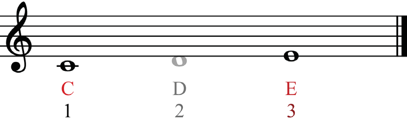
Intervals can be simple or compound. At this level, you will learn simple intervals.
These are intervals found within an octave. Figure 3.5 shows simple intervals built from note C.
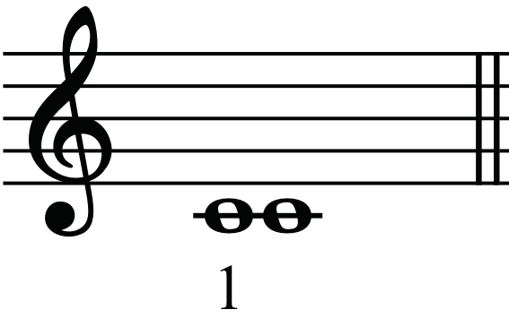
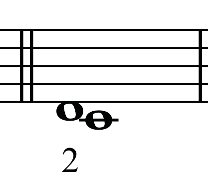
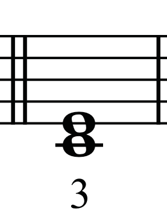
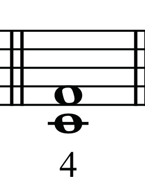
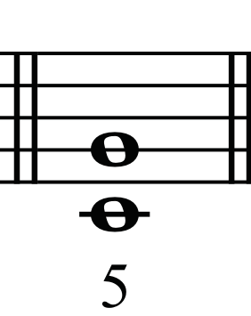
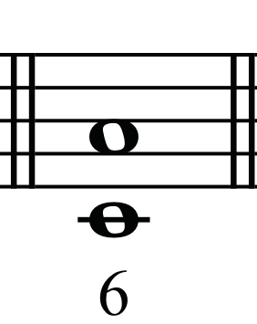
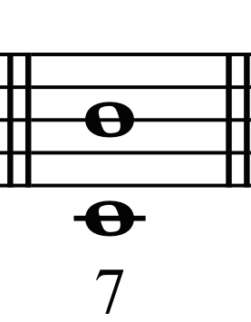
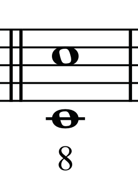
Figure 3.5: Simple intervals built from note C
Numbers such as 2nd, 3rd, 4th, 5th, 6th and 7th, as shown in Figure 3.6, are used to indicate the quantity of intervals.
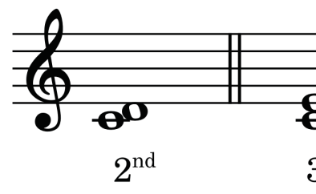
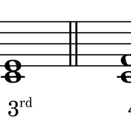
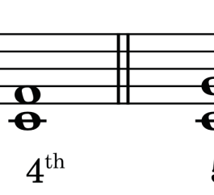
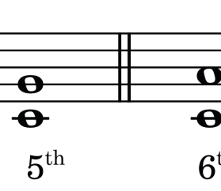
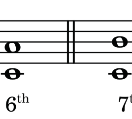
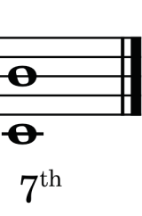
Figure 3.6: Quantities of intervals from the second to the seventh
When two notes have the same pitch, they result in a unison or prime interval.
When two notes are an octave apart, they result in an octave (8ve) interval. For example, from C to C makes a quantity (numeric size) of an octave (8ve), which is a distance of eight notes. Figure 3.7 shows unison or prime and octave intervals.
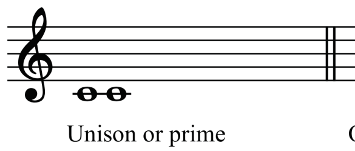
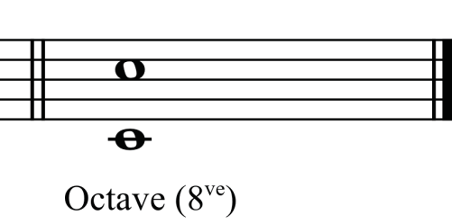
Figure 3.7: Unison or prime and octave intervals